DTC 45-1x
DTC 43-1x ("x" can be 0 thru 9 or A thru F): No Signal From the Left Side Impact Sensor (first))DTC 45-1x ("x" can be 0 thru 9 or A thru F): No Signal From the Left Side Impact Sensor (second)
Special Tools Required
- SRS inflator simulator 07SAZ-TB4011A
- SRS simulator lead L 070AZ-SNAA300
NOTE: Before doing this troubleshooting procedure, review SRS Precautions and Procedures.
1. Erase the DTC memory.
2. Turn the ignition switch ON (II), and wait for 10 seconds.
3. Read the DTC.
Is DTC 45-1x (except 45-11) indicated?
YES - Faulty left side impact sensor (second); replace the left side impact sensor (second).
NO - Go to step 4.
4. Read the DTC.
Is DTC 43-1x (except 43-11) indicated?
YES - Faulty left side impact sensor (first); replace the left side impact sensor (first).
NO - Go to step 5.
5. Read the DTC.
Is DTC 43-11 indicated?
YES - Go to step 6.
NO - Intermittent failure, the system is OK at this time.
6. Turn the ignition switch OFF.
7. Check for a damaged to the floor wire harness between SRS unit and left side impact sensor (first), left side impact sensor (first), and left side impact sensor (second).
Is the floor wire harness OK?
YES - Go to step 8.
NO - Replace the floor wire harness.
8. Disconnect the negative cable from the battery, and wait for 3 minutes.
9. Replace the left side impact sensor (first) with a known-good part.
10. Erase the DTC memory.
11. Turn the ignition switch ON (II), and wait for 10 seconds.
12. Read the DTC.
Is DTC 43-11 indicated?
YES - Go to step 13.
NO - Faulty left side impact sensor (first); replace the original left side impact sensor (first).
13. Turn the ignition switch OFF.
14. Disconnect the negative cable from the battery, and wait for 3 minutes.
15. Replace the left side impact sensor (second) with a known-good part.
16. Erase the DTC.
17. Turn the ignition switch ON (II), and wait for 10 seconds.
18. Read the DTC.
Is DTC 43-11 indicated?
YES - Go to step 19.
NO - Faulty left side impact sensor (second); replace the original left side impact sensor (second).
19. Turn the ignition switch OFF.
20. Disconnect the negative cable from the battery, and wait for 3 minutes.
21. Disconnect both seat belt tensioner 4P connectors.
22. Disconnect SRS unit connector B (28P) from the SRS unit.
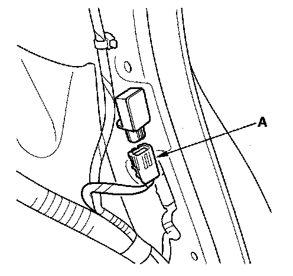
23. Disconnect the floor wire harness 2P connector (A) from the left side impact sensor (second).
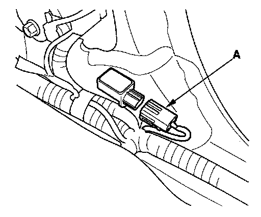
24. Disconnect the floor wire harness 4P connector (A) from the left side impact sensor (first).
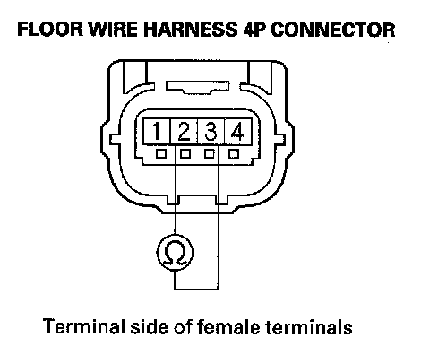
25. Measure the resistance between the No. 2 and No. 3 terminal of the floor wire harness 4P connector. There should be an open circuit (ohmmeter reads OL) or at least 1 Mohm.
Is the resistance as specified?
YES - Go to step 26.
NO - Short in the floor wire harness; replace the floor wire harness.
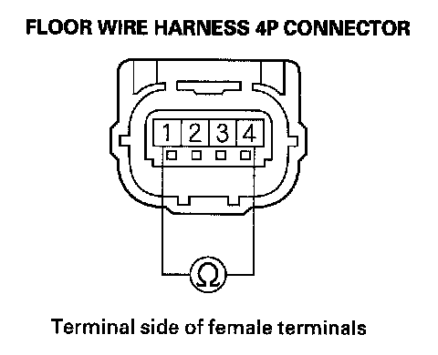
26. Measure the resistance between the No.1 and No. 4 terminal of the floor wire harness 4P connector. There should be an open circuit (ohmmeter reads OL) or at least 1 Mohm.
Is the resistance as specified?
YES - Go to step 27.
NO - Short in the floor wire harness; replace the floor wire harness.
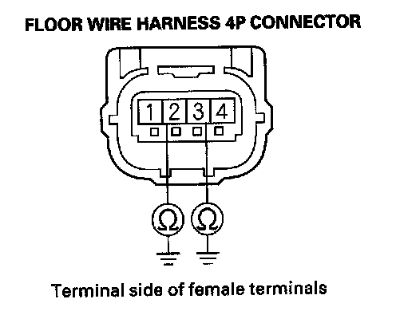
27. Measure the resistance between the No. 2 terminal of floor wire harness 4P connector and body ground, and between the No. 3 terminal and body ground. There should be an open circuit (ohmmeter reads OL) or at least 1 Mohm.
Is the resistance as specified?
YES - Go to step 28.
NO - Short to ground in the floor wire harness; replace the floor wire harness.
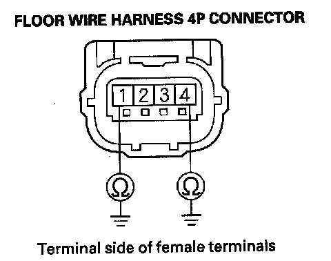
28. Measure the resistance between the No. 1 terminal of floor wire harness 4P connector and body ground, and between the No. 4 terminal and body ground. There should be an open circuit (ohmmeter reads OL) or at least 1 Mohm.
Is the resistance as specified?
YES - Go to step 29.
NO - Short to ground in the floor wire harness; replace the floor wire harness.
29. Reconnect the negative cable to the battery.
30. Turn the ignition switch ON (II).
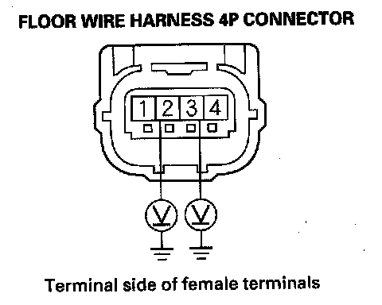
31. Measure the voltage between the No. 2 terminal of floor wire harness 4P connector and body ground, and between the No.3 terminal and body ground. There should be less than 1 V.
Is the voltage as specified?
YES - Go to step 32.
NO - Short to power in the floor wire harness; replace the floor wire harness.
32. Turn the ignition switch OFF.
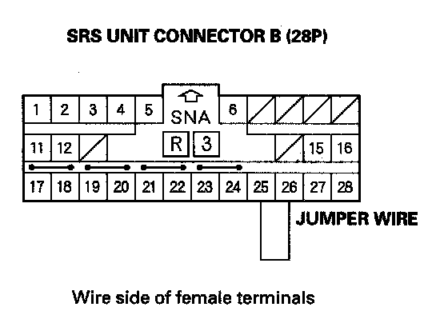
33. Install a jumper wire between the No. 25 terminal and No. 26 terminal of the SRS unit connector B (28P).
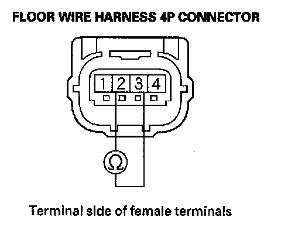
34. Measure the resistance between the No. 2 and No. 3 terminal of the floor wire harness 4P connector. There should be 0 - 10 ohm.
Is the resistance as specified?
YES - Go to step 35.
NO - Open in the floor wire harness; replace the floor wire harness.
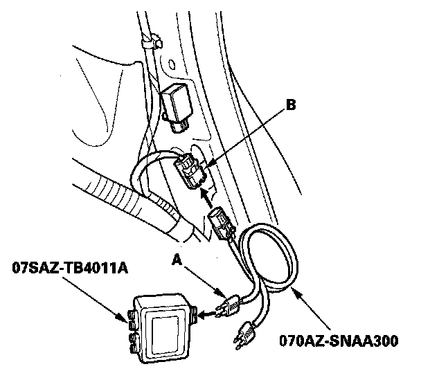
35. Connect the SRS inflator simulator (jumper connector) and the black lead (A) of simulator lead L to the floor wire harness 2P connector (B).
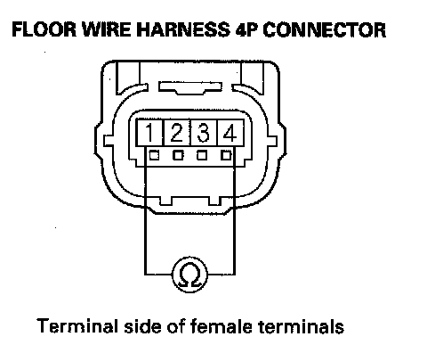
36. Measure the resistance between the No. 1 and No. 4 terminal of the floor wire harness 4P connector. There should be 0 - 1.0 ohm.
Is the resistance as specified?
YES - Reconnect the floor wire harness 4P connector to the left side impact sensor (first) and left side impact sensor (second). If the DTCs are still indicated, replace the SRS unit.
NO - Open in the floor wire harness; replace the floor wire harness.